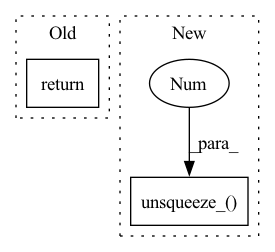

Pattern ID :31802
Before Change
action = action.tanh()
return action, std
if __name__ == "__main__":After Change
m = MultivariateNormal(mean, covariance)
action_base = m.sample()
log_prob = m.log_prob(action_base)
log_prob.unsqueeze_(-1 )
action = action_base.tanh()
// According to "Soft Actor-Critic" (Haarnoja et. al) Appendix CIn pattern: SUPERPATTERN
Frequency: 4
Non-data size: 2
Instances Fragment ID: 92838728
Project Name: tmdt-buw/karolos
Commit Name: e8ce439013ace3e3e9647de55ed22ddf38f35396
Time: 2020-04-23
Author: scheiderer@uni-wuppertal.de
File Name: agents/nnfactory/sac.py
M Class Name: Policy
N Class Name: Policy
M Method Name: forward(3)
N Method Name: forward(3)
M Parent Class: nn.Module
N Parent Class: nn.Module
M File Name: agents/nnfactory/sac.py
N File Name: agents/nnfactory/sac.py
M Start Line: 103
M End Line: 115
N Start Line: 104
N End Line: 123
Before Change
if not fix_mirror:
return preds[0]
else:
return fix_mirrors_numpy(preds, N_mask, CA_mask)
def Kabsch(A, B, backend="auto"):After Change
backend = "numpy"
// run calcs
if backend == "torch":
pre_dist_mat.unsqueeze_(0 )
pre_dist_mat = torch.repeat_interleave(pre_dist_mat, max(1,fix_mirror), dim=0)
// batched mds for full parallel
preds, stresses = mds_torch(pre_dist_mat, weights=weights,iters=iters,
tol=tol, verbose=verbose) Fragment ID: 92838729
Project Name: lucidrains/alphafold2
Commit Name: 98e16ad2931a27f90e05df940cff72c00074028d
Time: 2021-01-17
Author: ericalcaide1@gmail.com
File Name: utils.py
M Class Name: AnonimousClass
N Class Name: AnonimousClass
M Method Name: MDScaling(9)
N Method Name: MDScaling(9)
M Parent Class:
N Parent Class:
M File Name: utils.py
N File Name: utils.py
M Start Line: 469
M End Line: 483
N Start Line: 482
N End Line: 500
Before Change
stress))
break
return best_3d_coords, torch.tensor(his)
def mds_numpy(pre_dist_mat, weights=None, iters=10, tol=1e-5, verbose=2):
Gets distance matrix. Outputs 3d. See below for wrapper. After Change
weights = torch.ones_like(pre_dist_mat)
// batched MDS
if len(pre_dist_mat.shape) < 3:
pre_dist_mat.unsqueeze_(0 )
// start
batch, N, _ = pre_dist_mat.shape
his = []
// init random coords Fragment ID: 92838730
Project Name: lucidrains/alphafold2
Commit Name: 98e16ad2931a27f90e05df940cff72c00074028d
Time: 2021-01-17
Author: ericalcaide1@gmail.com
File Name: utils.py
M Class Name: AnonimousClass
N Class Name: AnonimousClass
M Method Name: mds_torch(5)
N Method Name: mds_torch(5)
M Parent Class:
N Parent Class:
M File Name: utils.py
N File Name: utils.py
M Start Line: 174
M End Line: 205
N Start Line: 181
N End Line: 215
Before Change
return bond_params,bonds
def make_masses(self,atom_types):
return torch.tensor([self.ff["masses"][at] for at in atom_types]).to(self.device)
def calculateAB(sigma, epsilon):After Change
def make_masses(self,atom_types):
masses = torch.tensor([self.ff["masses"][at] for at in atom_types])
masses.unsqueeze_(1 ) //natoms,1
masses.to(self.device)
return masses
Fragment ID: 92838731
Project Name: torchmd/torchmd
Commit Name: 372dc61bcb389f4c391cbba1b0f87bb60e83880f
Time: 2020-02-19
Author: g.defabritiis@gmail.com
File Name: torchmd/forcefield.py
M Class Name: Forcefield
N Class Name: Forcefield
M Method Name: make_masses(2)
N Method Name: make_masses(2)
M Parent Class:
N Parent Class:
M File Name: torchmd/forcefield.py
N File Name: torchmd/forcefield.py
M Start Line: 69
M End Line: 69
N Start Line: 70
N End Line: 73